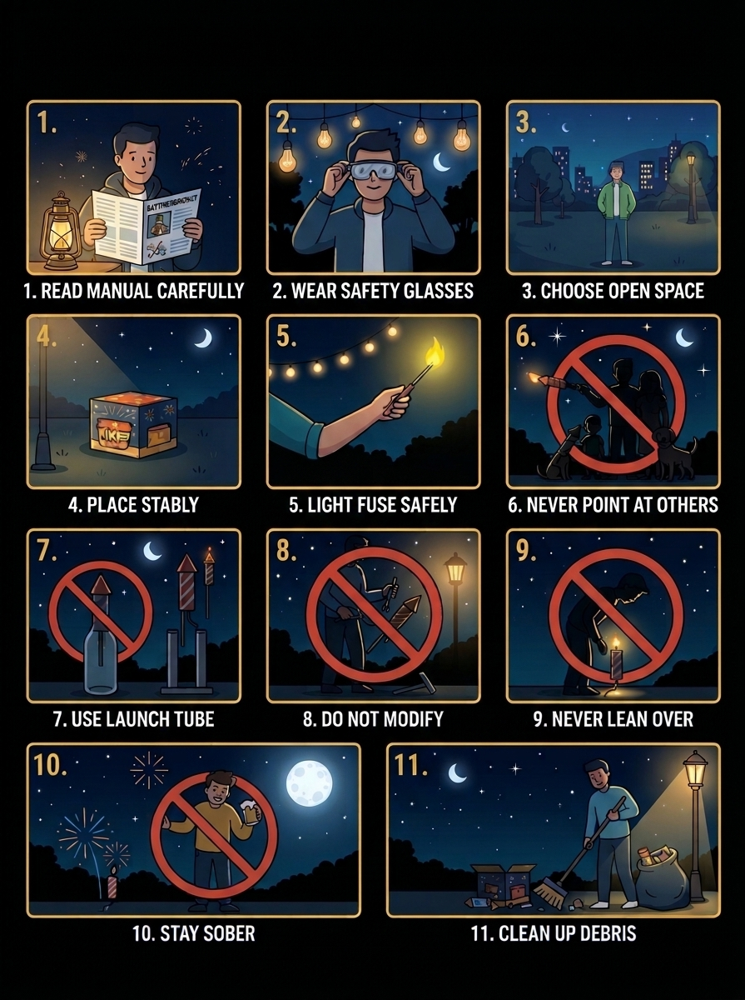

Lees de aanwijzingen op de verpakking, houd rekening met je omgeving en volg altijd de geldende regels. Neem geen risico's met vuurwerk dat niet goed functioneert.

Goed voorbereid
Do's & don'ts bij vuurwerk
✓ Do's
Lees vooraf de gebruiksaanwijzing en volg die precies.
Draag een veiligheidsbril en kleding die niet snel vlam vat; vermijd nylon.
Steek het vuurwerk alleen aan zoals op de verpakking staat aangegeven en houd afstand.
Respecteer de veiligheidsafstand op het artikel en houd toeschouwers op ruime afstand.
Zet artikelen stabiel neer en voorkom dat ze kunnen omvallen.
Waarschuw omstanders en houd rekening met huisdieren en kwetsbare personen.
Ruim na afloop het afval op, zodra dat veilig kan.
× Don'ts
Steek een weigeraar nooit opnieuw aan en buig er niet overheen.
Gebruik nooit een fles om een vuurpijl af te steken; gebruik alleen een geschikte lanceerinrichting volgens de aanwijzingen.
Houd vuurwerk niet in de hand, tenzij de verpakking uitdrukkelijk aangeeft dat het daarvoor bedoeld is.
Richt vuurwerk nooit op mensen, dieren, gebouwen of andere objecten.
Experimenteer niet met vuurwerk en wijzig of demonteer het niet.
Gebruik geen alcohol of drugs voor of tijdens het afsteken.
Steek geen vuurwerk af bij harde wind, storm of wanneer de omgeving onveilig is.
Voor je begint
Voorbereiding en bewaren
Bewaar vuurwerk zorgvuldig
Bewaar vuurwerk droog, in de originele verpakking en buiten bereik van kinderen en anderen.
Bewaar het alleen waar en in de hoeveelheid die volgens de lokale regels is toegestaan.
Houd het uit de buurt van warmte, open vuur en andere ontstekingsbronnen.
Plan een veilige plek
Koop uitsluitend bij een erkend verkooppunt en vraag uitleg als iets niet duidelijk is.
Kies een open plek waar omstanders op de voorgeschreven afstand kunnen blijven.
Plaats artikelen op een vlakke, stabiele ondergrond en zet ze alleen vast zoals de verpakking voorschrijft.
Gebruik voor pijlen alleen een geschikte, stabiele lanceerinrichting; nooit een fles.
Houd passend blusmateriaal bij de hand en steek niet af bij ongunstige weersomstandigheden.
Blijf alert
Tijdens het afsteken
Vertel omstanders dat je gaat beginnen en controleer dat iedereen op veilige afstand staat.
Houd dieren en onbevoegden uit de buurt van de afsteekplek.
Draag een veiligheidsbril en kleding die niet snel vlam vat.
Steek vuurwerk uitsluitend aan met de methode die op de verpakking staat. Gebruik geen open vlam als de instructies die niet voorschrijven.
Ga na het aansteken meteen naar de aangegeven veilige afstand.
Gaat een artikel niet af? Steek het niet opnieuw aan en benader het niet. Houd anderen weg en volg de aanwijzingen op de verpakking en van de lokale hulpdiensten voor wat je daarna moet doen.
Als het voorbij is
Na afloop en bij brandwonden
Ruim veilig op
Laat weigeraars liggen; steek ze niet opnieuw aan en volg de verpakking of het advies van de lokale hulpdiensten.
Neem afgestoken vuurwerk niet mee naar binnen. Houd afstand en voorkom dat kinderen ermee spelen.
Ruim afval pas op wanneer het veilig is en voer het af volgens de lokale richtlijnen.
Bij brandwonden
Koel een brandwond direct met zacht, lauw stromend water. Koel ongeveer 20 minuten als dat mogelijk is.
Bel bij ernstig letsel of twijfel het Europese noodnummer 112 en volg de aanwijzingen van de hulpdiensten.
Zoek medische hulp bij ernstige of uitgebreide brandwonden.
Controleer altijd de actuele regels
Leeftijd en CE-categorieën
De minimumleeftijd is afhankelijk van de categorie, de nationale en lokale wetgeving en de bestemming van het product. De leeftijden hieronder zijn een algemene aanduiding; controleer altijd de actuele regels en de leeftijdsvermelding op de verpakking.
F1Vanaf 12 jaar*
F2Vanaf 16 jaar*
P1Vanaf 18 jaar*; alleen voor de bedoelde toepassing, niet voor vermaak
* Minimumleeftijden kunnen afhangen van actuele nationale en lokale regels en de productbestemming. Controleer altijd de verpakking en de geldende wetgeving. Koop of gebruik geen product als je niet aan de wettelijke voorwaarden voldoet; andere categorieën kunnen uitsluitend voor bevoegde professionals bestemd zijn.